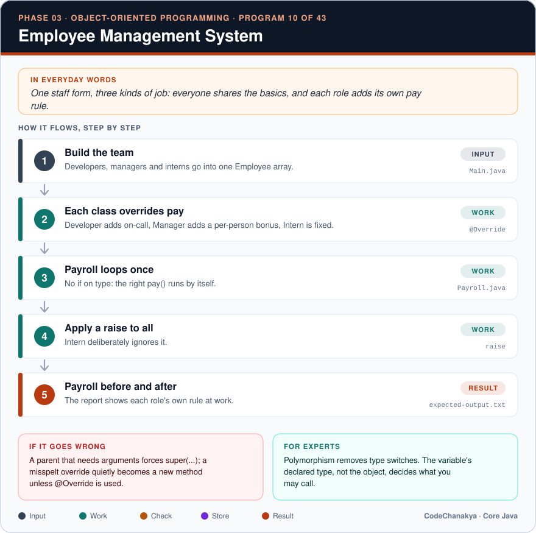

Phase 03 · Object-Oriented Programming · Program 10 of 43
Employee Management System
The problem
Developers, managers and interns are paid by different rules, yet HR wants one payroll report and one raise that apply to all of them.
Each kind of employee becomes a subclass that overrides only what differs, and the payroll code never asks which kind it is dealing with.
See the flow
The whole program as one picture. Read it top to bottom; the colour of each card says what kind of step it is.


If you are new to coding
One staff form, three kinds of job: everyone shares the basics, and each role adds its own pay rule.
If you are learning
Follow the numbered cards from top to bottom. Open the file named on each card, run the program, and match its output to the last card.
If you are experienced
Polymorphism removes type switches. The variable's declared type, not the object, decides what you may call.
Text version of the flow
- Build the team (input): Developers, managers and interns go into one Employee array.
- Each class overrides pay (work): Developer adds on-call, Manager adds a per-person bonus, Intern is fixed.
- Payroll loops once (work): No if on type: the right pay() runs by itself.
- Apply a raise to all (work): Intern deliberately ignores it.
- Payroll before and after (result): The report shows each role's own rule at work.
Read in this order
- 1Employee.javaThe general case.
- 2Developer.java, Manager.java, Intern.javaWhat differs, and nothing more.
- 3Payroll.javaAn Employee[] holding every kind.
The code
package com.codechanakya.employees; import java.math.BigDecimal; import java.math.RoundingMode; /** * The general employee: an id, a name and a base salary. * * Every other kind of employee in this program extends this class, so * everything written here is inherited for free. A subclass only writes what * is different about it, usually by overriding monthlyPay() or role(). */ public class Employee { private static final BigDecimal HUNDRED = new BigDecimal("100"); private final String id; private final String name; private BigDecimal baseSalary; public Employee(String id, String name, BigDecimal baseSalary) { this.id = id; this.name = name; this.baseSalary = baseSalary.setScale(2, RoundingMode.HALF_UP); } /** What this person is paid for a month. Subclasses add to it or replace it. */ public BigDecimal monthlyPay() { return baseSalary; } /** A short job title for reports. Subclasses override it. */ public String role() { return "Employee"; } /** Raises the base salary by a percentage, for example 10 for ten percent. */ public void applyRaise(BigDecimal percent) { BigDecimal factor = BigDecimal.ONE.add(percent.divide(HUNDRED, 4, RoundingMode.HALF_UP)); baseSalary = baseSalary.multiply(factor).setScale(2, RoundingMode.HALF_UP); } public String getId() { return id; } public String getName() { return name; } public BigDecimal getBaseSalary() { return baseSalary; } /** * One report line. Notice that role() and monthlyPay() are called without * knowing which subclass this object really is. Java picks the right * version when the program runs, which is polymorphism. */ @Override public String toString() { return String.format("%-6s %-13s %-10s %11s", id, name, role(), monthlyPay().toPlainString()); } }
package com.codechanakya.employees; import java.math.BigDecimal; /** A manager earns the base salary plus a fixed bonus for every person in the team. */ public class Manager extends Employee { private static final BigDecimal BONUS_PER_REPORT = new BigDecimal("1500.00"); private final int teamSize; public Manager(String id, String name, BigDecimal baseSalary, int teamSize) { super(id, name, baseSalary); this.teamSize = teamSize; } @Override public BigDecimal monthlyPay() { return super.monthlyPay().add(BONUS_PER_REPORT.multiply(BigDecimal.valueOf(teamSize))); } @Override public String role() { return "Manager"; } /** Only managers have a team, so only the Manager class offers this method. */ public int getTeamSize() { return teamSize; } }
package com.codechanakya.employees; import java.math.BigDecimal; /** * Prepares the monthly payroll for a group of employees. * * The array is declared as Employee[], yet it holds developers, managers and * interns. A subclass object can always be used where its parent is expected. * Payroll never checks which kind it is dealing with; each object knows how to * work out its own pay. */ public class Payroll { private final Employee[] staff; public Payroll(Employee[] staff) { this.staff = staff; } public BigDecimal total() { BigDecimal total = BigDecimal.ZERO.setScale(2); for (Employee employee : staff) { total = total.add(employee.monthlyPay()); } return total; } public Employee highestPaid() { Employee best = staff[0]; for (Employee employee : staff) { if (employee.monthlyPay().compareTo(best.monthlyPay()) > 0) { best = employee; } } return best; } public void printReport(String title) { System.out.println("=== " + title + " ==="); System.out.println(String.format("%-6s %-13s %-10s %11s", "ID", "Name", "Role", "Monthly pay")); for (Employee employee : staff) { System.out.println(employee); } System.out.println("Total payroll: " + total().toPlainString()); System.out.println("Highest paid : " + highestPaid().getName()); } }
Only the key files are shown. The rest are in the repository.
Run it
$ ./run.sh --check
=== Payroll before the raise ===
ID Name Role Monthly pay
E101 Asha Menon Developer 74000.00
E102 Dev Patel Developer 65000.00
E201 Rahul Verma Manager 99000.00
E301 Kiran Rao Intern 15000.00
Total payroll: 253000.00
Highest paid : Rahul Verma
Applying a 10 percent raise to everyone...
=== Payroll after the raise ===
ID Name Role Monthly pay
E101 Asha Menon Developer 81000.00
E102 Dev Patel Developer 71500.00
E201 Rahul Verma Manager 108000.00
E301 Kiran Rao Intern 15000.00
Total payroll: 275500.00
Highest paid : Rahul Verma
Rahul Verma manages a team of 6
OK: output matches expected-output.txt
This is the real output from OpenJDK 21.0.13 on Linux. It has not yet been run on Java 25, Windows or macOS.
Try it yourself
- BeginnerAdd another Developer.
- BeginnerAdd annualPay() to Employee.
- BeginnerChange the on-call allowance.
- IntermediateAdd a SalesExecutive with commission.
- IntermediateAdd countByRole() to Payroll.
- ChallengeAdd a Contractor without touching Payroll.
Hints and solutions are in the exercises and solutions folders. Try first.
Break it on purpose
Three files: a missing super call, an @Override typo, and a subclass method called through a parent variable. The README in the broken folder explains each one.